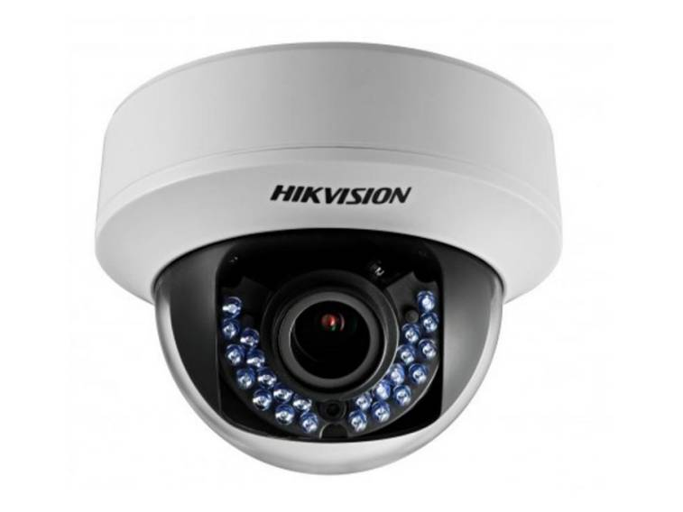
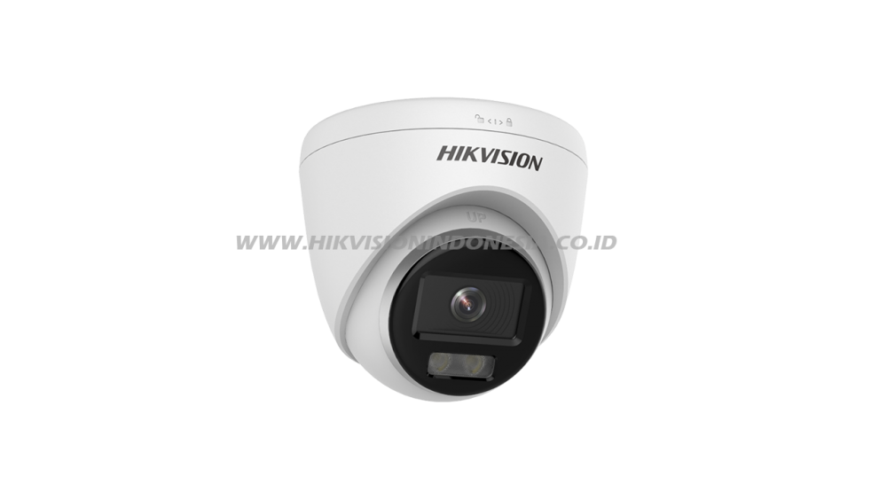

Hikvision DS-2CE56D5T-AVFIR Vari-Focal IR Camera |
Selengkapnya |
8 MP AcuSense Vandal WDR Fixed Dome Network Camera |
Selengkapnya | |
|
* lensa wide yang luas |
 |
* Pencitraan berkualitas tinggi dengan resolusi 8 MP |
CCTV IP CAM Hik DS-2CD1327GO-l |
Selengkapnya | |
|
* Pencitraan berkualitas tinggi dengan resolusi 2 MP |
 |